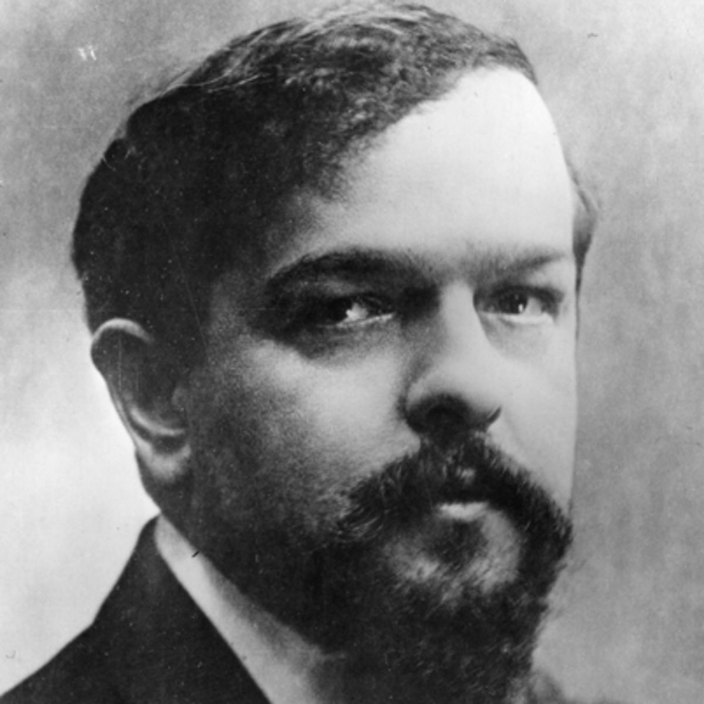

Claude Debussy
(De-buss-ee) 1862-1918
He started the modern section of classical music.

Pyotr Ilyich Tchaikovsky
(Chii-cough-ski) 1840-1893
Without him we wouldn't have the Nutcracker, Sleeping Beauty, and Swan Lake as ballets.

Frederic Chopin
(Show-pan) 1810-1849
He started to write music when he was seven years old.

Johannes Brahms
(Brarms) 1833-1897
He spent over 20 years writing just one symphony.
Richard Wagner
(Varg-ner) 1813-1883
He mainly wrote operas.